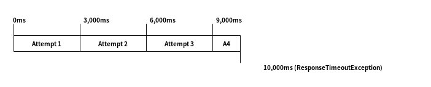

Automatic retry¶
When a client gets an error response, it might want to retry the request depending on the response. This can be accomplished using a decorator, and Armeria provides the following implementations out-of-the box.
Both behave the same except for the different request and response types.
So, let’s find out what we can do with RetryingClient.
RetryingClient¶
You can just use the decorator() method in ClientBuilder or WebClientBuilder to build a
RetryingClient. For example:
import com.linecorp.armeria.client.WebClient;
import com.linecorp.armeria.client.retry.RetryingClient;
import com.linecorp.armeria.client.retry.RetryStrategy;
import com.linecorp.armeria.common.AggregatedHttpResponse;
RetryStrategy strategy = RetryStrategy.onServerErrorStatus();
WebClient client = WebClient.builder("http://example.com/hello")
.decorator(RetryingClient.newDecorator(strategy))
.build();
AggregatedHttpResponse res = client.execute(...).aggregate().join();That’s it. The client will keep attempting until it succeeds or the number of attempts exceeds the maximum
number of total attempts. You can configure the maxTotalAttempts when making the decorator using
RetryingClient.newDecorator(strategy, maxTotalAttempts). Meanwhile, the strategy will decide to
retry depending on the response. In this case, the client retries when it receives 5xx response error or
an exception is raised.
RetryStrategy¶
You can customize the strategy by implementing RetryStrategy.
import com.linecorp.armeria.client.ClientRequestContext;
import com.linecorp.armeria.client.ResponseTimeoutException;
import com.linecorp.armeria.client.UnprocessedRequestException;
import com.linecorp.armeria.client.retry.Backoff;
import com.linecorp.armeria.common.HttpStatus;
new RetryStrategy() {
Backoff backoff = Backoff.ofDefault();
@Override
public CompletionStage<Backoff> shouldRetry(ClientRequestContext ctx,
@Nullable Throwable cause) {
if (cause != null) {
if (cause instanceof ResponseTimeoutException ||
cause instanceof UnprocessedRequestException) {
// The response timed out or the request has not been handled
// by the server.
return CompletableFuture.completedFuture(backoff);
}
}
if (ctx.log().responseHeaders().status() == HttpStatus.CONFLICT) {
return CompletableFuture.completedFuture(backoff);
}
// Return null to stop retrying.
return CompletableFuture.completedFuture(null);
}
};This will retry when one of ResponseTimeoutException and UnprocessedRequestException is raised or
the response’s status is 409 Conflict.
Note
We declare a Backoff as a member and reuse it when a strategy returns it, so that we do not
return a different Backoff instance for each shouldRetry(). RetryingClient
internally tracks the reference of the returned Backoff and increases the counter that keeps
the number of attempts made so far, and resets it to 0 when the Backoff returned by the strategy
is not the same as before. Therefore, it is important to return the same Backoff instance unless
you decided to change your Backoff strategy. If you do not return the same one, when the
Backoff yields a different delay based on the number of retries, such as an exponential backoff,
it will not work as expected. We will take a close look into a Backoff at the next section.
Note
UnprocessedRequestException literally means that the request has not been processed by the server.
Therefore, you can safely retry the request without worrying about the idempotency of the request.
For more information about idempotency, please refer to What are idempotent and/or safe methods?.
You can return a different Backoff according to the response status.
import com.linecorp.armeria.common.HttpStatusClass;
new RetryStrategy() {
Backoff backoffOnServerErrorOrTimeout = Backoff.ofDefault();
Backoff backoffOnConflict = Backoff.fixed(100);
@Override
public CompletionStage<Backoff> shouldRetry(ClientRequestContext ctx,
@Nullable Throwable cause) {
if (cause != null) {
if (cause instanceof ResponseTimeoutException ||
cause instanceof UnprocessedRequestException) {
// The response timed out or the request has not been handled
// by the server.
return CompletableFuture.completedFuture(backoffOnServerErrorOrTimeout);
}
}
HttpStatus status = ctx.log().responseHeaders().status();
if (status.codeClass() == HttpStatusClass.SERVER_ERROR) {
return CompletableFuture.completedFuture(backoffOnServerErrorOrTimeout);
} else if (status == HttpStatus.CONFLICT) {
return CompletableFuture.completedFuture(backoffOnConflict);
}
// Return null to stop retrying.
return CompletableFuture.completedFuture(null);
}
};If you need to determine whether you need to retry by looking into the response content, you should implement
RetryStrategyWithContent and specify it when you create an WebClient
using RetryingClientBuilder:
import com.linecorp.armeria.client.retry.RetryStrategyWithContent;
RetryStrategyWithContent<HttpResponse> strategy =
new RetryStrategyWithContent<HttpResponse>() {
Backoff backoff = Backoff.ofDefault();
@Override
public CompletionStage<Backoff> shouldRetry(ClientRequestContext ctx,
HttpResponse response) {
return response.aggregate().handle((result, thrown) -> {
if (thrown != null) {
if (thrown instanceof ResponseTimeoutException ||
thrown instanceof UnprocessedRequestException) {
// The response timed out or the request has not been handled
// by the server.
return backoff;
}
} else if ("Should I retry?".equals(result.contentUtf8())) {
return backoff;
}
return null; // Return null to stop retrying.
});
}
};
// Create an WebClient with a custom strategy.
WebClient client = WebClient
.builder(...)
.decorator(RetryingClient.builder(strategy)
.newDecorator())
.build();
AggregatedHttpResponse res = client.execute(...).aggregate().join();Tip
You might find the peel() method in Exceptions useful when the exception you are trying to
handle is wrapped by exceptions like CompletionException and ExecutionException:
import com.linecorp.armeria.common.Exceptions;
@Override
public CompletionStage<Backoff> shouldRetry(ClientRequestContext ctx,
@Nullable Throwable cause) {
if (cause != null) {
if (cause instanceof ResponseTimeoutException ||
cause instanceof UnprocessedRequestException) {
// The response timed out or the request has not been handled
// by the server.
return CompletableFuture.completedFuture(backoff);
}
Throwable peeled = Exceptions.peel(cause);
if (peeled instanceof MyException) { ... }
}
...
}Backoff¶
You can use a Backoff to determine the delay between attempts. Armeria provides Backoff
implementations which produce the following delays out of the box:
Fixed delay, created with
Backoff.fixed()Random delay, created with
Backoff.random()Exponential delay which is multiplied on each attempt, created with
Backoff.exponential()
Armeria provides Backoff.ofDefault() that you might use by default. It is exactly the same as:
Backoff.exponential(200 /* minDelayMillis */,
10000 /* maxDelayMillis */,
2.0 /* multiplier */)
.withJitter(0.2 /* jitterRate */);The delay starts from minDelayMillis until it reaches maxDelayMillis multiplying by multiplier every
retry. Please note that the .withJitter() will add jitter value to the calculated delay.
For more information, please refer to the API documentation of the com.linecorp.armeria.client.retry
package.
maxTotalAttempts vs per-Backoff maxAttempts¶
If you create a Backoff using .withMaxAttempts(maxAttempts) in a RetryStrategy,
the RetryingClient which uses the RetryStrategy will stop retrying when the number of
attempts passed maxAttempts. However, if you have more than one Backoff and return one after
the other continuously, it will keep retrying over and over again because the counter that
RetryingClient internally tracks is initialized every time the different Backoff is
returned. To limit the number of attempts in a whole retry session, RetryingClient limits
the maximum number of total attempts to 10 by default. You can change this value by specifying
maxTotalAttempts when you build a RetryingClient:
RetryingClient.newDecorator(strategy, maxTotalAttempts);Or, you can override the default value of 10 using the JVM system property
-Dcom.linecorp.armeria.defaultMaxTotalAttempts=<integer>.
Note that when a RetryingClient stops due to the attempts limit, the client will get the last received
Response from the server.
Per-attempt timeout¶
ResponseTimeoutException can occur in two different situations while retrying. First, it occurs
when the time of whole retry session has passed the time previously configured using:
ClientBuilder.responseTimeoutMillis(millis);
// or..
ClientRequestContext.setResponseTimeoutAfterMillis(millis);You cannot retry on this ResponseTimeoutException.
Second, it occurs when the time of individual attempt in retry has passed the time which is per-attempt timeout.
You can configure it when you create the decorator:
RetryingClient.newDecorator(strategy, maxTotalAttempts,
responseTimeoutMillisForEachAttempt);You can retry on this ResponseTimeoutException.
For example, when making a retrying request to an unresponsive service
with responseTimeoutMillis = 10,000, responseTimeoutMillisForEachAttempt = 3,000 and disabled
Backoff, the first three attempts will be timed out by the per-attempt timeout (3,000ms).
The 4th one will be aborted after 1,000ms since the request session has reached at 10,000ms before
it is timed out by the per-attempt timeout.

In the example above, every attempt is made before it is timed out because the Backoff is disabled.
However, what if a Backoff is enabled and the moment of trying next attempt is after the point of
ResponseTimeoutException? In such a case, the RetryingClient does not schedule for the
next attempt, but finishes the retry session immediately with the last received Response.
Consider the following example:

Unlike the example above, the Backoff is enabled and it makes the RetryingClient perform
retries with 3-second delay. When the second attempt is finished at 9,000ms, the next attempt will be
at 12,000ms exceeding the response timeout of 10,000ms.
The RetryingClient, at this point, stops retrying and finished the retry session with the last
received Response, retrieved at 9,000ms from the attempt 2.
RetryingClient with logging¶
You can use RetryingClient with LoggingClient to log. If you want to log all of the
requests and responses, decorate LoggingClient with RetryingClient. That is:
RetryStrategy strategy = RetryStrategy.onServerErrorStatus();
WebClient client = WebClient.builder(...)
.decorator(LoggingClient.newDecorator())
.decorator(RetryingClient.newDecorator(strategy))
.build();This will produce following logs when there are three attempts:
Request: {startTime=..., length=..., duration=..., scheme=..., host=..., headers=[...]
Response: {startTime=..., length=..., duration=..., headers=[:status=500, ...]
Request: {startTime=..., ..., headers=[..., armeria-retry-count=1, ...]
Response: {startTime=..., length=..., duration=..., headers=[:status=500, ...]
Request: {startTime=..., ..., headers=[..., armeria-retry-count=2, ...]
Response: {startTime=..., length=..., duration=..., headers=[:status=200, ...]Note
Did you notice that the armeria-retry-count header is inserted from the second request?
RetryingClient inserts it to indicate the retry count of a request.
The server might use this value to reject excessive retries, etc.
If you want to log the first request and the last response, no matter if it’s successful or not, do the reverse:
import com.linecorp.armeria.client.logging.LoggingClient;
RetryStrategy strategy = RetryStrategy.onServerErrorStatus();
// Note the order of decoration.
WebClient client = WebClient.builder(...)
.decorator(RetryingClient.newDecorator(strategy))
.decorator(LoggingClient.newDecorator())
.build();This will produce single request and response log pair and the total number of attempts only, regardless how many attempts are made:
Request: {startTime=..., length=..., duration=..., scheme=..., host=..., headers=[...]
Response: {startTime=..., length=..., headers=[:status=200, ...]}, {totalAttempts=3}Note
Please refer to Nested log, if you are curious about how this works internally.
RetryingClient with circuit breaker¶
You might want to use Circuit breaker with RetryingClient using decorator:
import com.linecorp.armeria.client.circuitbreaker.CircuitBreakerStrategy;
import com.linecorp.armeria.client.circuitbreaker.CircuitBreakerClientBuilder;
CircuitBreakerStrategy cbStrategy = CircuitBreakerStrategy.onServerErrorStatus();
RetryStrategy myRetryStrategy = new RetryStrategy() { ... };
WebClient client = WebClient.builder(...)
.decorator(CircuitBreakerClient.builder(cbStrategy)
.newDecorator())
.decorator(RetryingClient.builder(myRetryStrategy)
.newDecorator())
.build();
AggregatedHttpResponse res = client.execute(...).aggregate().join();This decorates CircuitBreakerClient with RetryingClient so that the CircuitBreaker
judges every request and retried request as successful or failed. If the failure rate exceeds a certain
threshold, it raises a FailFastException. When using both clients, you need to write a custom
RetryStrategy to handle this exception so that the RetryingClient does not attempt
a retry unnecessarily when the circuit is open, e.g.
import com.linecorp.armeria.client.circuitbreaker.FailFastException;
new RetryStrategy() {
Backoff backoff = Backoff.ofDefault();
@Override
public CompletionStage<Backoff> shouldRetry(ClientRequestContext ctx,
@Nullable Throwable cause) {
if (cause != null) {
if (cause instanceof FailFastException) {
// The circuit is already open so returns null to stop retrying.
return CompletableFuture.completedFuture(null);
}
if (cause instanceof ResponseTimeoutException ||
cause instanceof UnprocessedRequestException) {
// The response timed out or the request has not been handled
// by the server.
return CompletableFuture.completedFuture(backoff);
}
}
... // Implement the rest of your own strategy.
}
};Note
You may want to allow retrying even on FailFastException when your endpoint is configured with
client-side load balancing because the next attempt might be sent to the next available endpoint.
See Client-side load balancing and service discovery for more information about client-side load balancing.